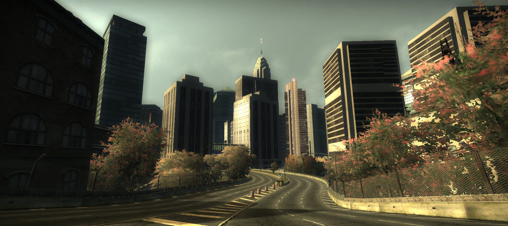
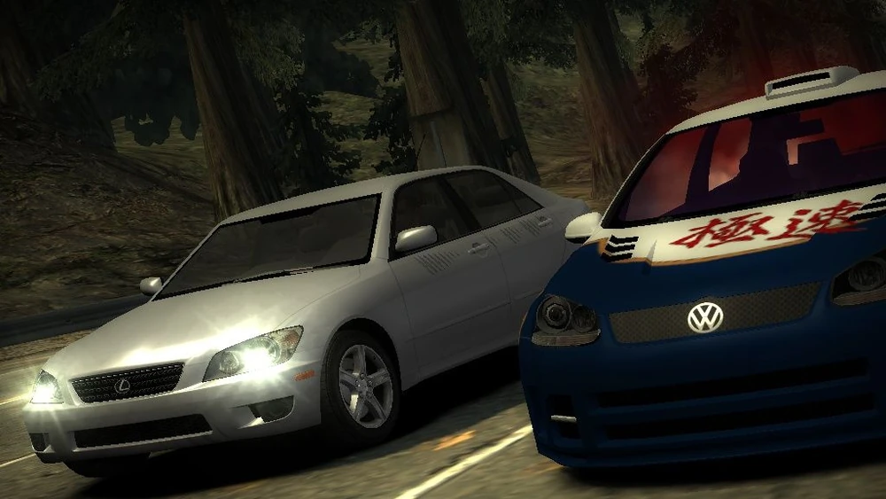

Need for Speed: Most Wanted - History/Lore
Most Wanted
2005
Em Rockport City:
Tudo começa 6 dias antes de uma disputa, a principal na primeira parte do jogo. Você está dirigindo sua BMW M3 GTR pelas ruas de Rockport, quando encontra uma piloto de rua conduzindo um Mazda RX-8. Ambos começam a correr juntos, quando de repente, ao pararem num semáforo, e em cima da faixa de pedestres, aparece um Chevrolet Corvette C6.R, pertencente ao Sargento Cross, um dos principais "vilões" do jogo. A piloto que corria com você consegue escapar, mas Cross se aproxima de você e começa a conversar. Ele e sua companheira de trabalho brincam arrogantemente, tanto com você quanto com seu carro. Ele afirma que as rachas na cidade foram extintas (uma vez que seu trabalho permitiu tal feito) , e que tinha uma pequena surpresa para você, assim como para os outros corredores. Assim, ele manda você sair do carro e se prepara para prendê-lo, quando uma chamada de urgência acontece bem na hora. Cross e sua companheira ficam furiosos por terem que deixá-lo, mas o policial deixa bem claro que da próxima vez você não teria sorte. Como punição, ele pega as chaves do Corvette C6R e deixa um enorme risco na sua BMW M3, e por final, brinca dizendo "belos arranhões".
Corridas Iniciais:
Depois de escapar de Cross, você continua correndo pelas ruas de Rockport, procurando por disputas. Em um determinado trecho, você encontra um Toyota Supra, pilotado por Ronald McCrea (Ronnie). Este lhe chama para um racha. Após vencê-lo, ele te leva até um lugar onde estão reunidos outros corredores. Dentre eles, está Clarence Callaham, mais conhecido como Razor, que virá a ser seu principal rival no jogo. Ele te vê como mais um garoto corredor que gostaria de "comer poeira" e ser humilhado, e já demonstra interesse em roubar as peças da BMW. Nesse momento, a piloto que correu com você na sua chegada à cidade aparece. Seu nome é Mia Townsend, e ela te defende, afirmando a todos ali que você é mais rápido do que qualquer um, por ter presenciado sua performance anteriormente. Razor retruca, dizendo que Mia não conhece seu grupo e nem ele direito, e que seu carro, um Ford Mustang GT, deixa qualquer um comendo poeira, e isso inclui seus próprios colegas. Então, Mia decide dar início aos desafios, e pergunta quanto Razor poderia apostar num racha. Este diz que 5 mil dólares estaria ótimo, porém, não seria ele quem iria correr, e sim um de seus comparsas, estando convicto de que um deles poderia facilmente vencer você. Mia provoca Razor, perguntando o que os comparsas tinham a ver com a situação. Este diz que não iria correr com ninguém antes de fazer um teste com seus colegas, algo que Ronnie ressalta logo em seguida, dizendo que, para que você pudesse desafiar Razor (que inclusive estava no 15º lugar da Lista Negra — a famosa Blacklist — dos corredores mais procurados de Rockport e das cidades vizinhas), primeiro deveria ganhar reputação, correndo com outras pessoas. Após todas essa afirmações, um dos colegas de Razor, Toru Sato (mais conhecido como Bull), toma a frente de todos e é o primeiro a te desafiar para um racha. Mia muda de ideia e decide aumentar a aposta para 10 mil dólares, ideia essa que deixa Razor mais animado. Então, este chama todos para assistirem à corrida, inclusive querendo que a polícia também entre na situação. Após toda essa conversa, você inicia a disputa com Bull. Ao vencê-lo, você é desafiado por um homem de nome desconhecido, mas é conhecido como Rog. Este não tem nenhuma ligação com Razor ou a Blacklist (apesar de saber quem eles são), é simplesmente outro corredor que decide testar sua capacidade. Depois de ser vencido também, ele se mostra amigável com você, dizendo que gostou de seu estilo, e que você deveria tomar cuidado com Razor e seus colegas. Imediatamente após ele se despedir, Razor aparece com seu carro e finalmente te desafia. Porém, agora as coisas ficam bem diferentes: de acordo com as regras da Blacklist, para desafiar um membro da mesma, o que deve ser apostado não é dinheiro, e sim o próprio carro (esse tipo de aposta tem o nome de PinkSlip). Então, ele vai embora e diz que estaria esperando.
Histórias de outros:
todos viram em breve